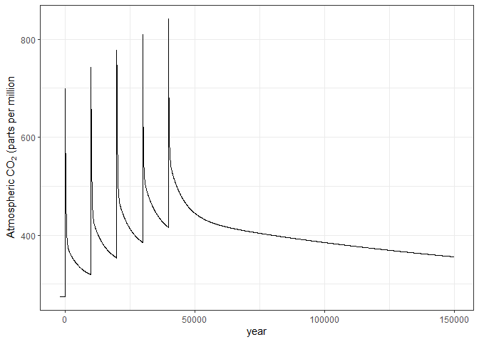
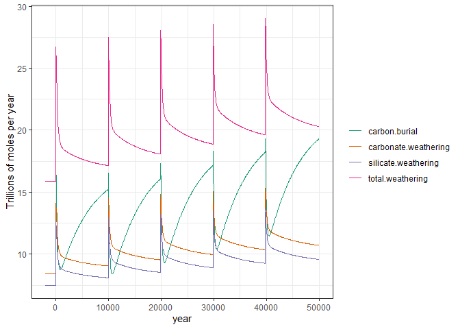
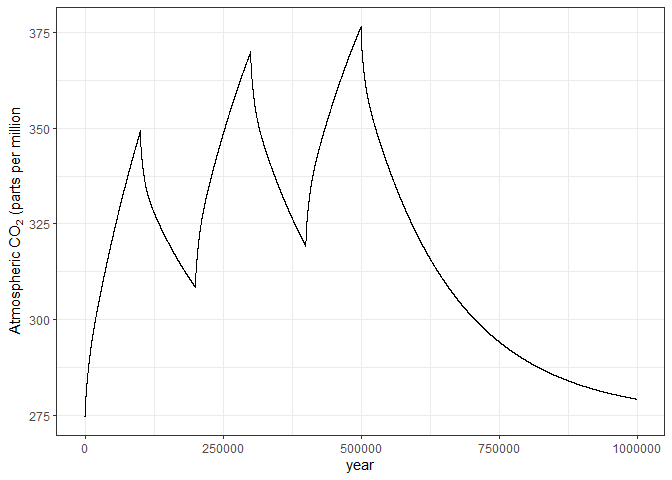
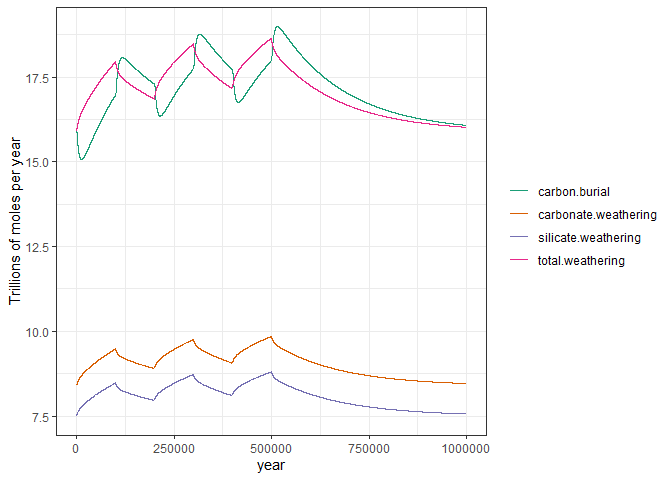

The geocarb package runs simulations of the geochemical carbon cycle with varying emissions of carbon dioxide from both natural and anthropogenic sources. It tracks the partitioning of carbon in the atmosphere and ocean, including carbonate buffering reactions in the ocean, and accounts for weathering and the burial of carbonate mineral sediments on the sea floor.
Installation
You can install the development version of geocarb from GitHub with:
# install.packages("remotes")
remotes::install_github("jonathan-g/geocarb")Examples
Multiple spikes of CO2 emissions:
This is a basic example which simulates a period of approximately 2 million years, with five spikes of 1000 gigatons of carbon every 10,000 years, starting in year zero and continuing through year 40,000. After the last spike, the simulation runs for another 2 million years to track the environmental fate of those emissions.
library(geocarb)
# Run GEOCARB with multiple spikes of CO2
# Spin up for 5 million years to initialize the model
# Then five spikes of CO2 every 10,000 years
# Then 2 million years after the last spike.
#
# Since spikes happen at the end of a period, note
# that there are six periods but only five spikes.
#
periods = c( 5E6, 1E4, 1E4, 1E4, 1E4, 2E6)
spikes = c(1000, 1000, 1000, 1000, 1000)
run_geocarb("multi_spike.dat", periods = periods, co2_spike = spikes)
multi_spike = read_geocarb("multi_spike.dat")We can plot the results of this, tracking the atmospheric concentration of carbon dioxide:
library(dplyr)
library(tidyr)
library(ggplot2)
multi_spike %>% filter(year <= 1.5E5) %>%
ggplot(aes(x = year, y = co2.atmos)) +
geom_line() +
labs(x = "year", y = expression(paste("Atmospheric ", CO[2], " (parts per million")))
We can also plot the operation of the weathering “thermostate” in responding to the increase in carbon dioxide.
multi_spike %>% filter(year <= 5E4) %>%
pivot_longer(cols = c(carbonate.weathering, silicate.weathering,
total.weathering, carbon.burial),
names_to = "var", values_to = "val") %>%
ggplot(aes(x = year, y = val, color = var)) +
geom_line() +
labs(x = "year", y = "Trillions of moles per year") +
scale_color_brewer(palette = "Dark2", name = NULL)
Alternating periods of high and low volcanic degassing
# Run GEOCARB with pulses of sustained degassing
# Spin up for 5 million years to initialize the model
# Then five periods of 100,000 years with alternating
# normal and heightened volcanic degassing
# Then 2 million years after the last period.
#
# This also shows that you can get the data directly
# from run_geocarb without needing to read it from a
# file.
periods = c(5E6, 1E5, 1E5, 1E5, 1E5, 1E5, 2E6)
degas = c(7.5, 9.5, 7.5, 9.5, 7.5, 9.5, 7.5)
alt_degassing = run_geocarb(NULL, periods = periods,
co2_spike = 0, degas = degas)We can plot the results of this, tracking the atmospheric concentration of carbon dioxide:
alt_degassing %>% filter(year <= 1E6) %>%
ggplot(aes(x = year, y = co2.atmos)) +
geom_line() +
labs(x = "year", y = expression(paste("Atmospheric ", CO[2], " (parts per million")))
We can also plot the operation of the weathering “thermostate” in responding to the increase in carbon dioxide.
alt_degassing %>% filter(year <= 1E6) %>%
pivot_longer(cols = c(carbonate.weathering, silicate.weathering,
total.weathering, carbon.burial),
names_to = "var", values_to = "val") %>%
ggplot(aes(x = year, y = val, color = var)) +
geom_line() +
labs(x = "year", y = "Trillions of moles per year") +
scale_color_brewer(palette = "Dark2", name = NULL)